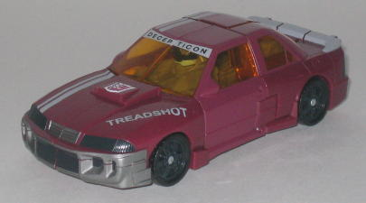
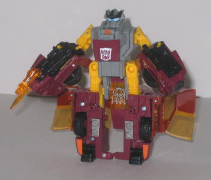
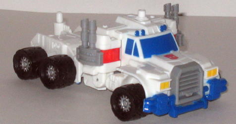
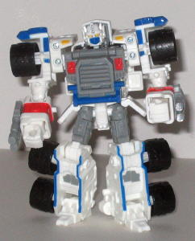

Nightbeat
Treadshot
w/ Nightbeat vs. Ultra Magnus w/ Over-Run ("Battle in a Box"'; Secondary
Retailer Exclusive)
Nightbeat
Treadshot
w/ Nightbeat vs. Ultra Magnus w/ Over-Run ("Battle in a Box"'; Secondary
Retailer Exclusive)
Price : $16 (at Meijer's)
(NOTE: Because these sets are repaints, these are not full-blown reviews. They mainly cover any changes made to the mold and the color scheme, and merely compares them to their original molds. For a review of Armada Sideswipe w/ Nightbeat-- the predecessor to Treadshot w/ Nightbeat-- click here . For a review of Armada Super-Con Optimus Prime w/ Over-Run-- the predecessor to Ultra Magnus w/ Over-Run-- click here .)
Nightbeat
Allegiance
: Minicon
Size
: Mini-Con
Difficulty of Transformation
: Very
Easy
Color Scheme
: Dull gray, black,
orange-yellow, and some shiny metallic red
Rating
: 1.4
With the exception of
a slight change of the shade of gray, Universe Nightbeat is the exact same
as Armada Nightbeat. Oh, boy-- another crummy Universe Minicon "repaint".
 Treadshot
Treadshot


Allegiance
: Decepticon
Size
: Deluxe
Difficulty of Transformation
: Medium
Color Scheme
: Dull red-purple, dull
gray, black, transparent amber, orange-yellow, and some fluorescent orange,
white, metallic gunmetal gray, white, and milky light blue
Powerlinx ports
: 4 (1 gimmicked)
Rating
: 6.7
I don't know what it
is about this mold, that we need TWO lazy repaints of it for the Universe
line just a few months apart. Anyways, the actual vehicle shell components
have a new color scheme-- the red-purple and black looks quite good together,
and Treadshot does have some new paint apps in his vehicle mode. They're
in a rather G2-style, though; you won't find too many Transformers nowadays
with their name emblazoned on their vehicle mode somewhere. I think that
was a little corny, myself. He has a racing stripe, but on one side of
his vehicle mode-- again, another oddity. I would have preferred a racing
stripe on the other sode of the vehicle mode rather than "TREADSHOT", myself.
"DECEPTICON" is also spelled out on the top of his front window, and a
large transparent Decepticon symbol is on his back window. Treadshot also
has a remold, just like his fellow mold exclusive
Oil
Slick
-- he has a Decepticon symbol on his chest in robot mode now,
instead of an Autobot one. Unfortunately, also like Oil Slick, nothing
really has changed color-wise when it comes to Treadshot's robot parts--
they're the same as they were on Armada Sideswipe. And that orange yellow
really doesn't fit well with the red-brown, let me tell ya. The gray is
a slightly less milky color on Sideswipe, but it's something that you really
have to look for-- you won't notice it right off the bat. His other robot
mode paint apps are the same as on Sideswipe, too. Well, his robot mode
optics are a different color-- light blue-- but that's hardly anything.
Other than that, same color, same place, same everything-- it's deja vu
all over again. Bleh.
Over-Run
Allegiance
: Minicon
Size
: Mini-Con
Difficulty of Transformation
: Very
Easy
Color Scheme
: Light gray and some
black, glossy red, and white
Rating
: 4.0
Over-Run is VERY similar
to his predecessor Armada Over-Run-- the diff is only in the details. This
version has glossy red windows, like Armada Run-Over, and some of the smallest
plastic parts connecting the arms to the rest of the body are white instead
of blue. He also has the dark blue paint apps removed from his rear wings.
But that's really it-- very minor, minor differences which aren't even
worth the webspace needed to take pictures of them. Another boooring Minicon
repaint.
 Ultra
Magnus
Ultra
Magnus


Allegiance
: Autobot
Size
: Deluxe
Difficulty of Transformation
: Easy
Color Scheme:
White, light gray,
black, and some silver, light red, yellow, and glossy deep blue
Powerlinx ports
: 2 (1 gimmicked)
Rating
: 9.0
Ultra Magnus is a very nice repaint, especially for a Universe Exclusive, and is a great G1 nod to boot. G1 Ultra Magnus ' core robot mode was basically just the G1 Prime toy, but entirely white with blue accents. Well, here's Ultra Magnus, a repaint of ARMADA Optimus Prime, but mostly white with some accents. Normally, I'd expect a white-and-gray repaint to be pretty dull, but Hasbro spiced it up quite a bit with all the red, blue, and yellow paint apps on him-- they really make him just great to look at. He really doesn't have a big-time secondary color like his mold's predecessor, but that's the only think keeping him from passing up Armada Deluxe prime, in my view. Well, mold-wise. It appears that there's a rather serious assembly error when all these Universe Magnuses were put together-- the lower arm pieces were put on backwards, restricting elbow articulation unless you fix them. It's rather difficult to fix, but if you have a moderate amount of skill, you can check out a fix on this web page . It's still pretty annoying, but luckily, it's pretty much the only downside to this repaint.
The Minicon repaints in this set are very lackluster, and Treadshot's entire robot mode is pretty much a carbon copy of his predecessor Armada Sideswipe's. Ultra Magnus is the real star of this set, with a great, attractive color scheme that's also a G1 homage. Unfortunately, there is that assembly problem... If you don't have either of this set's previous molds, and you don't mind fixing Magnus' assembly problem, then this set is mildly recommended at its $16 bargain price. Otherwise, pass.
No Stats
Review by Beastbot
(NOTE: A "Secondary Retailer" exclusive means that it's not in any of the big store chains, but in the lesser ones, such as Meijer's, Walgreens, and the like.)